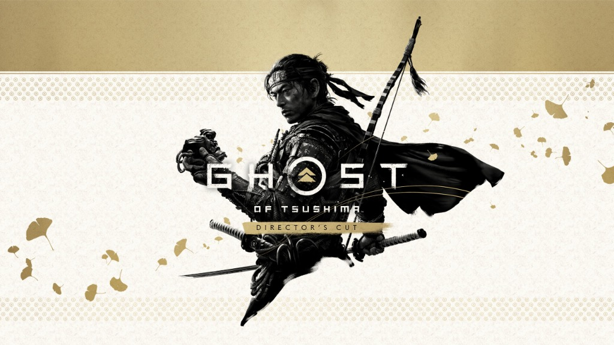
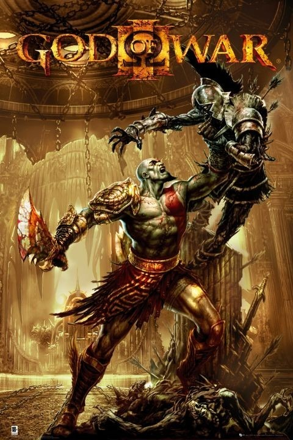
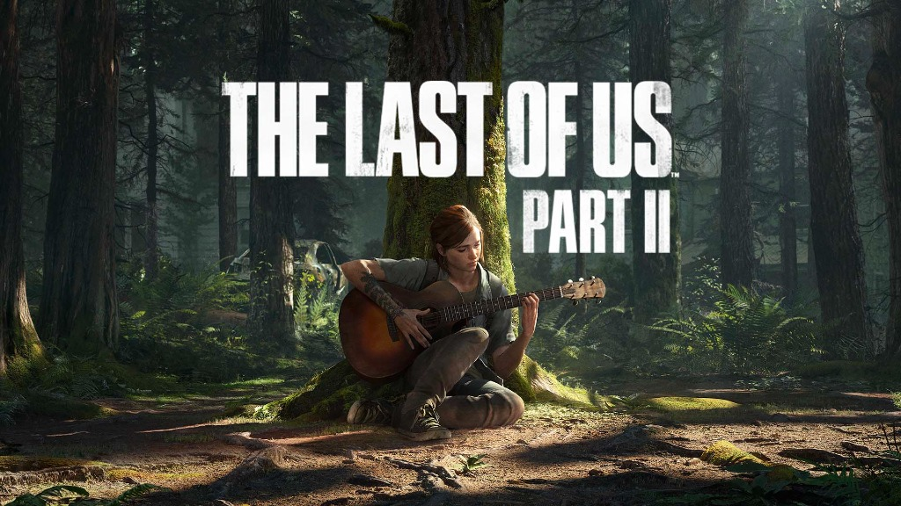
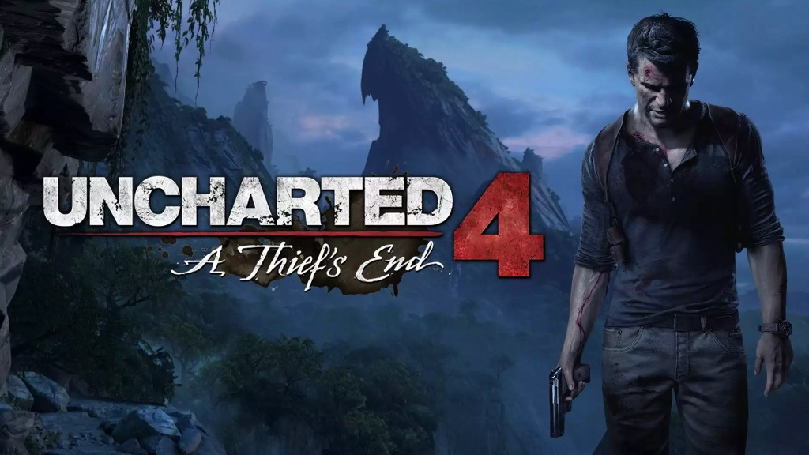
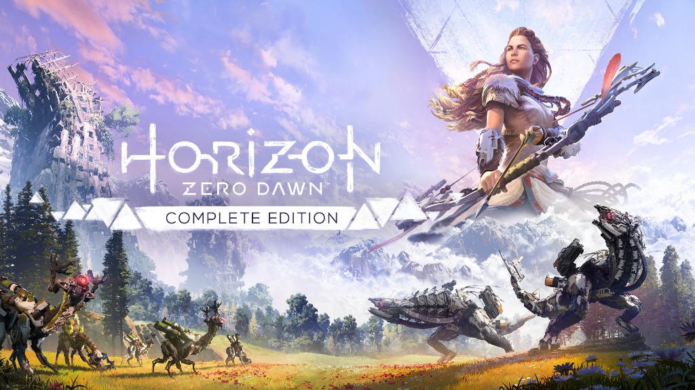

PlayStation Exclusives
Cette affiche est un hommage graphique aux principales exclusivités PlayStation, ces franchises de légende qui ont forgé l'identité et le succès des consoles de Sony. Elle rassemble dans une composition unique et harmonieuse les héros majeurs des studios PlayStation Studios.
Le travail de composition a consisté à fusionner ces univers très différents au sein d'une atmosphère cohérente : jeux d'éclairages bleutés et néons inspirés de la marque PlayStation, incrustation de textures et travail poussé des ombres pour donner l'impression d'une scène unifiée et épique.
Les jeux réunis sur l'affiche
Chaque jeu représenté sur l'affiche incarne un univers fort et une référence incontournable de l'histoire PlayStation :

Ghost of Tsushima
Une immersion grandiose dans le Japon féodal du XIIIe siècle sur l'île de Tsushima envahie par l'armée mongole, où le samouraï Jin Sakai doit transgresser la voie de l'honneur pour devenir le redoutable « Fantôme ».

God of War
Une épopée mythologique brutale et monumentale où Kratos, guerrier spartiate trahi par les dieux de l'Olympe, déchaîne sa rage destructrice dans une quête de vengeance viscérale contre les divinités antiques.

The Last of Us Part II
Un voyage poignant au cœur d'une Amérique post-apocalyptique dévastée par une terrible infection fongique, explorant avec une intensité rare les conséquences du deuil et du cycle inexorable de la vengeance à travers le destin d'Ellie.

Uncharted 4 : A Thief's End
Une grande aventure cinématographique menée tambour battant par le chasseur de trésors Nathan Drake, replongé malgré lui dans une dernière expédition périlleuse en quête de Libertalia, la légendaire colonie pirate.

Horizon Zero Dawn
Un monde futuriste spectaculaire où la nature luxuriante a repris ses droits et où la Terre est dominée par de mystérieuses machines animales, parcouru par la chasseresse Aloy pour percer les secrets de ses origines.